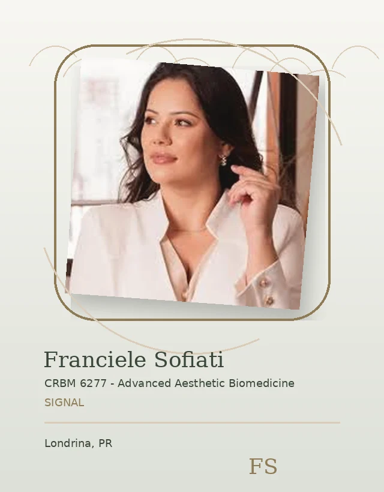

Signal / Values Hero
Care values
Four principles shape the Sofiati experience.

Signal / About Mission Bridge
Brand story
Read more about the purpose behind the experience.

Signal / Cuidado
Care
Care begins with listening closely and respecting individual context.
Signal / Naturalidade
Naturality
Naturality means planning that respects your features and comfort.
Signal / Visual Break
Values guide choices
The experience should feel thoughtful from start to finish.

Signal / Values in Consultation
In consultation
These values shape how questions, goals, and next steps are discussed.
Signal / Related Guidance
Related guidance
Continue with care or results guidance.
Signal / Final CTA
Begin with care
Send a question or request an evaluation.